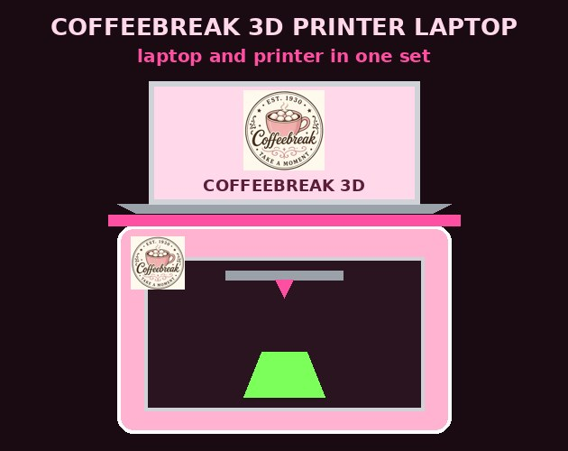

Coffeebreak 3D Printer Laptop
Laptop and printer in one set. This is a laptop with a matching compact 3D printer base, not a laptop with a printer inside. The laptop docks on top of the printer so they work together as one unit.
$4,500 AUD
Delivery included in AustraliaAdd to cart
Pay by PayID (Teachers Mutual Bank): darkokaz@gmx.com
1. Open your banking app and choose Pay with PayID.
2. Enter PayID darkokaz@gmx.com (Teachers Mutual Bank).
3. Amount: $4500.00 AUD.
4. Reference: your name or email + "Coffeebreak 3D Printer Laptop".
1. Open your banking app and choose Pay with PayID.
2. Enter PayID darkokaz@gmx.com (Teachers Mutual Bank).
3. Amount: $4500.00 AUD.
4. Reference: your name or email + "Coffeebreak 3D Printer Laptop".
Pay by PayID (Teachers Mutual Bank): darkokaz@gmx.com
Amount: $4,500.00 AUD
Reference: your name + "CB 3D"
Amount: $4,500.00 AUD
Reference: your name + "CB 3D"
What's in the box
- 💻Laptop for 3D work
A 15.6-inch gaming-class laptop with a fast screen, a multi-core processor and dedicated graphics, ready for 3D design and slicing. - 🖨️Compact enclosed 3D printer base
A beginner-friendly enclosed 3D printer that sits under the laptop and receives prints over Wi-Fi. It is a separate printer, not built into the laptop. - 🧩Coffeebreak dock plate
A riser plate that sits on top of the printer so the laptop docks on it as one unit, with a gap to keep the printer top clear. Lift the laptop off to open the printer lid. - 🌈Starter PLA filament
Four 1kg spools in different colours. - 🧰Tool kit
Print scraper, flush cutters, deburring tool, hex keys and a glue stick. - 🔌One USB-C cable
Plus the power leads for the laptop and printer. - 🧊Coffeebreak 3D Converter, preloaded
Turn drawings and pictures into 3D printable STL files, plus free slicer software ready to send them to the printer. - ☕Matching Coffeebreak skins
One on the laptop lid and one on the printer. - 🎁Coffeebreak gift box
Laptop and printer packed together in one Coffeebreak box.
Why it pays for itself
Print your own merch, figures, keyrings and replacement parts at home for the cost of the filament, instead of buying or outsourcing them. The Coffeebreak 3D Converter and the slicer are free, so there are no software subscriptions.The printer is a separate unit that sits under the laptop. Print speed, size and finish depend on the model and settings. Overseas buyers: PayPal only, international shipping quoted after order.